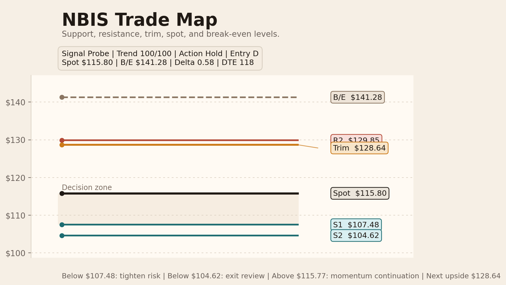

Featured visual
Trade map preview
The trade map is now the lead visual in the report stack: cleaner English labels, compressed level selection, and a more presentation-ready hierarchy.

Sample hub
This page points to reports/sample-site-current, so it stays fresh whenever you regenerate the latest sample report.
Featured visual
The trade map is now the lead visual in the report stack: cleaner English labels, compressed level selection, and a more presentation-ready hierarchy.
Secondary visual
